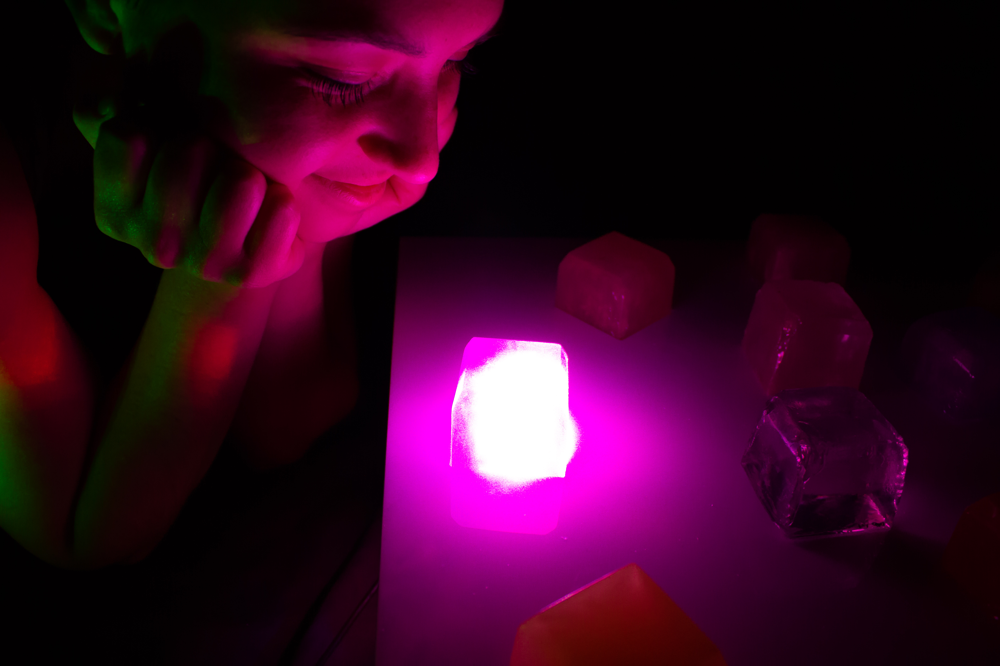
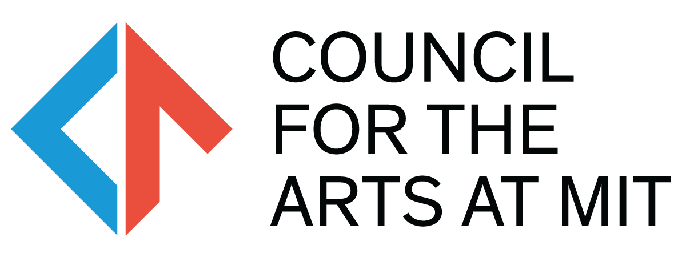

My last undergrad semester, I had the joy of receiving a CAMIT Grant to support an arts tech project of mine surrounding the questions of light and aesthetic and how we can expand on them both together. This is a stand alone art project that branches out of the research I am currently pursuing at the MIT Media Lab.
This piece is an interactive table top where a user can play with various resins under illumination of LED lights and a white laser that I made. Various interactions occur as the user makes their own arrangements of light.
Photos and video below:



CAMIT supported this project financially. Furless Cosmetics was kind enough to supply pigments for this project and for my research at large.
